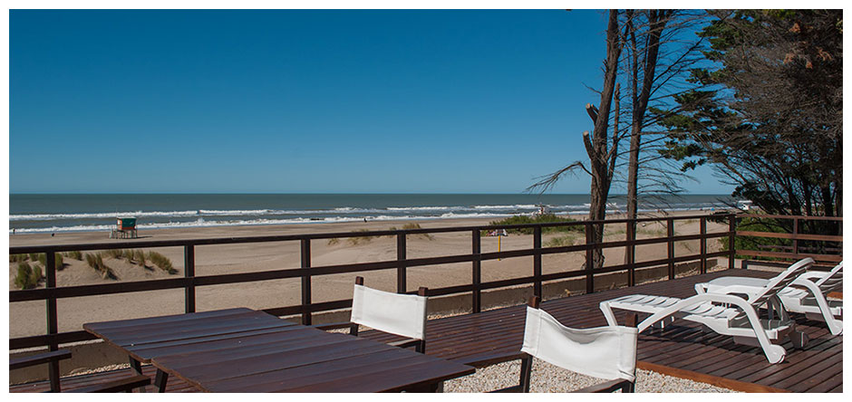
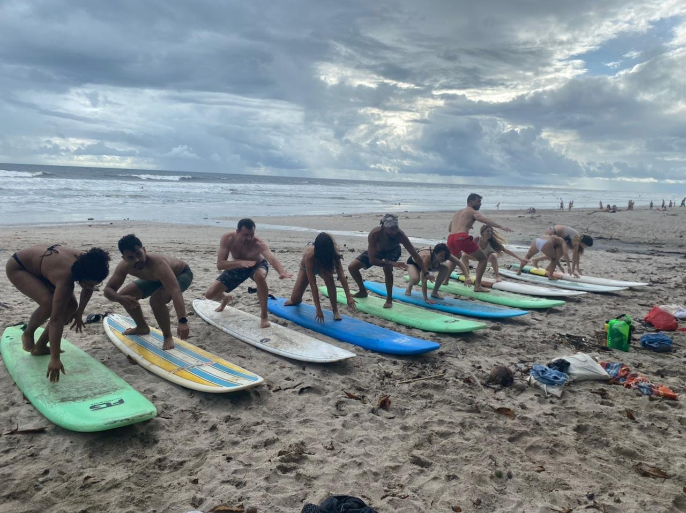
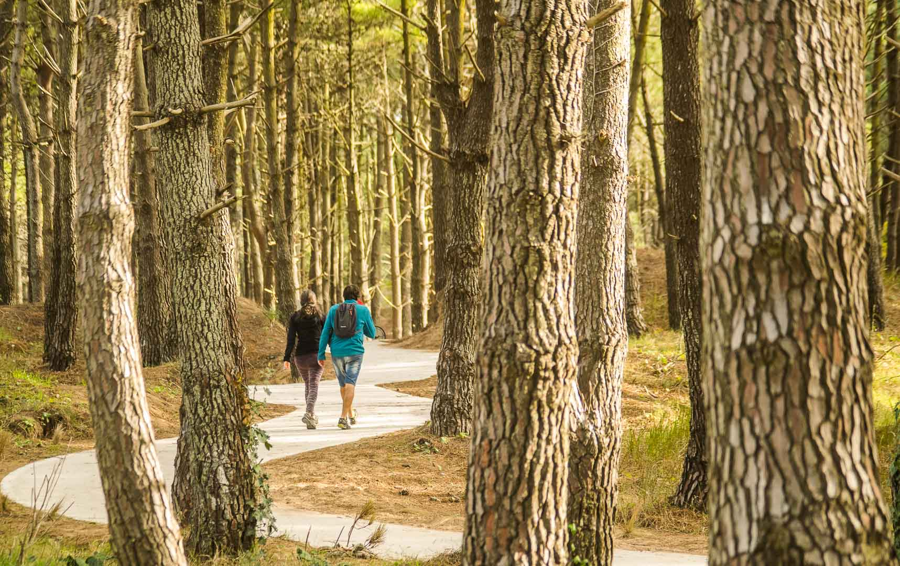

Nuestros viajes
Ofrecemos viajes a diferentes destinos en la costa atlántica. A continuación, encontrarás algunos de nuestros paquetes de viaje más populares:
-

Paquete de playa
Disfruta de días llenos de sol, playa y relax. Incluye alojamiento en hotel, desayuno y traslados a la playa.
-

Paquete aventura
Para los más aventureros, este paquete incluye actividades como surf, kitesurf, buceo y mucho más. Incluye alojamiento en cabañas y desayuno.
-

Paquete cultural
Conoce la historia y cultura de la costa atlántica con este paquete. Incluye visitas a museos, recorridos por pueblos y ciudades históricas, y alojamiento en hoteles con encanto.
Reserva tu viaje
Si estás interesado en reservar alguno de nuestros paquetes de viaje, contáctanos a través de nuestro formulario de contacto o por teléfono.
Contacto